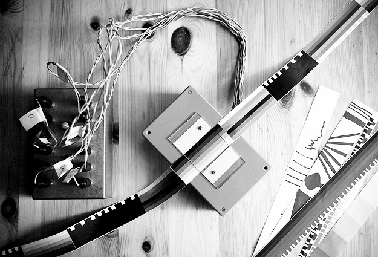
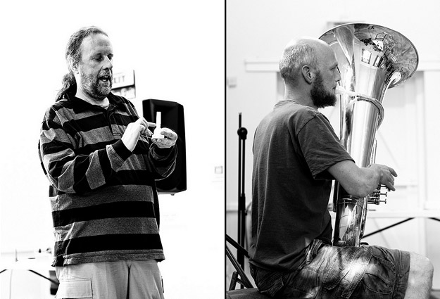

If Wet #2 was a slightly more intimate affair than If Wet #1. The first hot day for ages and a bank holiday Sunday surely didn’t help in terms of numbers but we had a fun and informative time hosting the wonderful Juneau Projects.
Here is the full audio recording, in two parts: Part1 / Part2
Here’s an overview of what went on, so you can access topics of interest:
Welcome

“If at any point in proceedings you want to interject, ask a question, just stick your hand up. We have a very open forum throughout all of this!”
MortonUnderwood present…
[2:52 – 51:20 | Part 1]
Noise box synths and optical sequencer
[2:52 – 34:08 | Part 1]
We brought along three of our Game Conroller noise box synths, a stereo noise box (codenamed THE BEAST), a controller in a Spam tin and our prototype optical sequencer to demo.

“Arguably the standard format for these sorts of noise boxes is for them to be a drone noise box. [demo] […] What we wanted to do with these, this particular model, is make something that’s a bit more playable, so you can be quite rhythmical. [demo]”
[Talking about our Game Controller format synths]
“It’s simulating what it is like if the battery goes flat. […] controlling the amount of flatness your battery has, rather than having to have a selection of batteries that you pop in.”
[Talking about power-starve on our synths]
All the synths we build have at least one oscillator wired out to two photo ports, to allow the functionality to be extended via anything that provides a resistance value.
“We’re all going to try and hold hands. […] We’ll see how successful this is.”
[Talking about the synth extension and touch contacts]

“the extension allows you to design something that does for you what you want to do in your liveset”
[Talking about the synth extension and how it allows for easy controller customisation]

Next up David demonstrated the optical sequencer he has built, which again can wire into the extension port of our synths.
“we call this, as a sort of working title, the Pocket Oramics”
[Referencing part of the history surrounding our optical sequencer]

“Part of the thinking with these is that they can be made cheaply enough so that they can be bought by anyone that wishes to experiment. “
[Talking about our optical sequencer relative to others before it]

“The suggestion was that you could have one mechanical device that is pulling this strip through and another mechanical device that had a pen on it, which was then writing on it.”
[Talking about an idea for a generative sequencer suggested at If Wet #1]
3D printed tuba mouthpiece
[34:08 – 51:04 | Part 1]
During If Wet #2 we were running a “MarkerBot Replicator 2” 3D printer at the back of the hall. It printed a tuba mouthpiece. We had a pre-prepared (filed and sanded) version of this mouthpiece with us, which we demonstrated attached to Sam’s tuba.

“Quick Google, mouthpiece.stl, oh look somebody has put up a CAD design for a trombone mouthpiece. Trouble is I don’t know any trombone players. […] Quick Google, find out how long a tuba mouthpiece is, take the trombone mouthpiece dimensions and just make one that’s the same length, and let all the other dimensions go.”
“The interesting point is you can now choose to do things you couldn’t normally do with a conventional mouthpiece. […] I could take a pressure driver, a loudspeaker in a can, a pipe, build one of these with a pipe attachment and I can now have a sequence of notes playing through here while Sam plays another sequence on the tuba. […] I have no idea whether that will sound interesting, horrible, exciting, good, bad, or indifferent, but I bet nobody has done that before.”
[Talking about the melting point of 3D printed PLA material]
“So a PLA teapot isn’t quite a chocolate teapot but it’s well on the way to being a chocolate teapot.”
[Talking about the melting point of 3D printed PLA material]
Juneau Projects
[00:35 – 41:00 | Part 2]
It was a delight having Juneau Projects come down to talk about their project “Blackbird in Infospace”, their EP which is downloadable to a USB drive at “shrines” throughout Worcester. They also demonstrated their distinctive musical instruments and performed a piece from the EP.

“By the third day we kinda bonded with one another by accidentally breaking one of the artworks”
[Ben talking about how him and Phil first got to know each other]

“You can go to your computer and get almost anything you want delivered to you. We are not against that, that’s a great thing, but we we interested in looking at the the other way around and making something that had elements of deliberately slowing down that process.”
[Phil talking about why they were interested in getting people out and about to download their EP]
“This is the song we mentioned about the guy in the Crusades who flew back to Worcester on a Black Swan.”

Run What Ya Brung
[41:32 – 57:00 | Part 2]
We run a regular feature at If Wet in which members of the audience are invited to bring along and demonstrate instruments, sound objects and sonic oddities. Thanks to Richard for bringing another great piece to If Wet.
Richard Windley
[58:48 – 1:02:18 | Part 2]
Richard is a Hereford-based artist/maker who is currently working in the field of technical reproductions, created for television and film. His work and experience spans many years. He brought along two of his Theremins to show us.

“You make the first iteration of it, you think that’s good if I did a Mark2 it would be that much better but you never get around to making a Mark2. On to the next project.”
[Talking about his creative process]
Once again, the evening ended with a lot of people sticking around to chat. One of the core aims of If Wet it to build links locally. We are confident there are people who share our interests out there and we’d like to hook up with them to form some sort of creative community. Another successful If Wet, see you at the next one!
________________________________________
The full set of Pete’s photographs of If Wet are available here.
Everyone who presented! Everyone who engaged and provided feedback. Everyone who came. Kate Sugden and Aston University for their support with the noise boxes. Kavita and Gill for running the bar (and making the nettle soup). Pete Ashton for taking photographs.